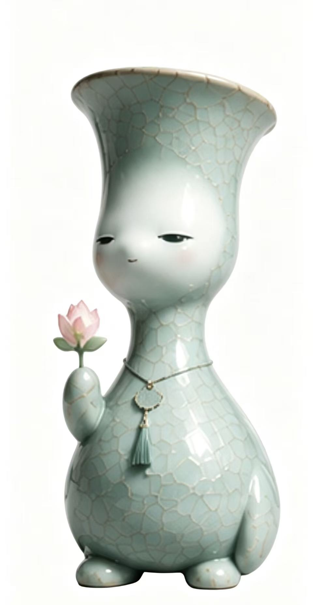
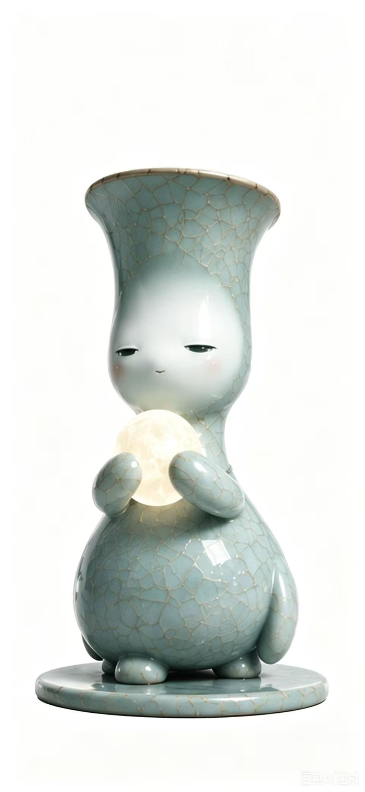
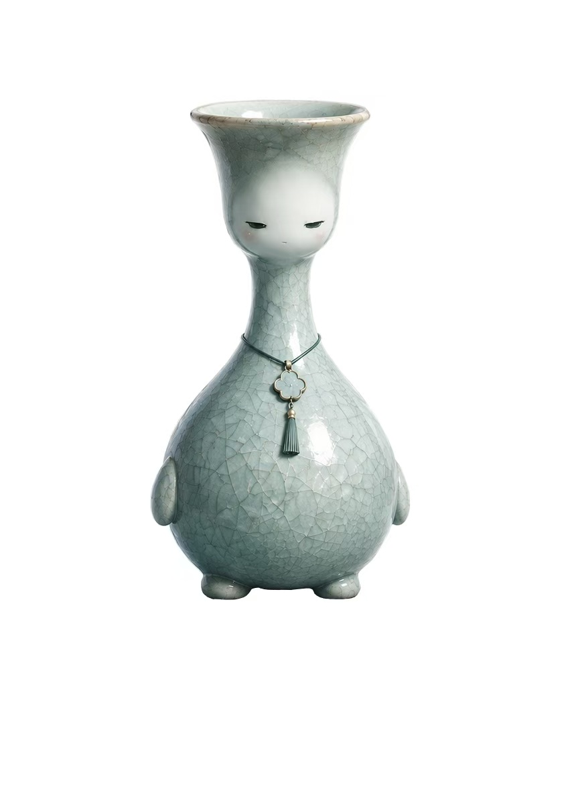

RU SPIRIT
“ 以汝窑之魂，化为当代数字生命 ”

手持一瓣傲然独立的粉色莲花，巧妙扣合了北宋汝窑经典的莲花瓣圈足器物美学。代表着生命的首次觉醒与在喧嚣凡尘中萌发的清雅希望。

双臂轻柔合抱一颗散发温柔暖光的微缩明月，借由月光的呼吸频率与观众的心灵产生频率共振，表达永恒的温润守护、常态陪伴与内在治愈力。

最凝练纯粹的拟人瓶身形态，佩戴着精致的传统古典如意锁流苏。静立闭目间，仿佛在进行一场跨越千年的时空对话，诉说华夏文脉的守望与沉淀。
使用鼠标拖拽旋转，滚轮放大缩小查看细节
《汝灵》系列的内核在于探寻古代重器在赛博时代的“数字灵性”。北宋汝窑以天青为尊，微弱的冰裂纹路蕴含着自然造物的缺憾之美。我们将这种静谧、古拙的优雅，剥离出冰冷的展柜，融汇至充满呼吸感与陪伴感的现代情绪治愈IP中。